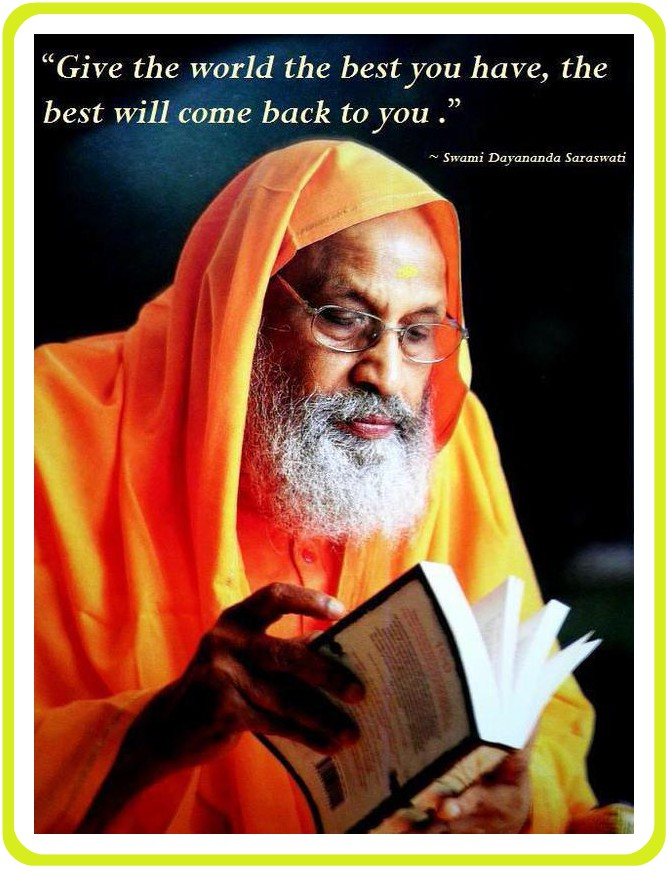

Genesis about SDET
Swami Dayananda Educational Trust (SDET), a public charitable trust, is involved in providing quality education to the economically backward sections of society surrounding Manjakkudi village in Tiruvarur district, Tamil Nadu. Manjakkudi is a small hamlet and is the heart of all of SDET’s activities in the region.

SDET oversees the day-to-day running of three educational institutions in Manjakkudi and Sembangudi village. This meets the educational requirements of 300 villages surrounding Manjakkudi on a daily basis.
Over the years, SDET has expanded its scope of activities to include traditional knowledge systems (Vedapatashala and Vedanta retreats), animal welfare (Goshala), sustainable living initiatives (organic farming), healthcare (Ayurveda Clinic and wellness centre), and other community development initiatives.
About the College
Started functioning in 2001 with a focus on providing quality education in this rural atmosphere for deserving students irrespective of creed and deed, the college was founded by Swami Dayananda Educational Trust at Manjakkudi, Thiruvarur District.
Situated in the birthplace of His Holiness Pujya Sri Swami Dayananda Saraswati on 9.15 acres of land with admirable infrastructure, the institution empowers economically challenged students to compete with others.
Affiliated with Bharathidasan University, Tiruchirappalli, the institution has grown into one of the premier institutions in this region, now offering 12 UG, 4 PG, 2 M.Phil, and 1 Ph.D. program, educating 1900 students. Additionally, diploma courses in Yoga and seven certificate courses through the Entrepreneur Cell at Bharathidasan University have been introduced, earning the college a reputation as a top educational center for higher learning.
A dedicated team of seventy faculty members has contributed to the institution’s steady progress since its inception, striving for high standards of academic excellence.
The institution was recognized by UGC under section 2(f) and 12(B) in 2018. Committed to providing education to economically weaker students, the college plays a vital role in uplifting the material conditions of its students.
The college fosters a rich heritage through activities such as Carnatic music, yoga classes, and an annual convention during convocation, deeply embedding intellectual vigor in students.
His Holiness Pujya Sri Swami Dayananda Saraswati graces its motto: "Educating the Future Rooted in Tradition."